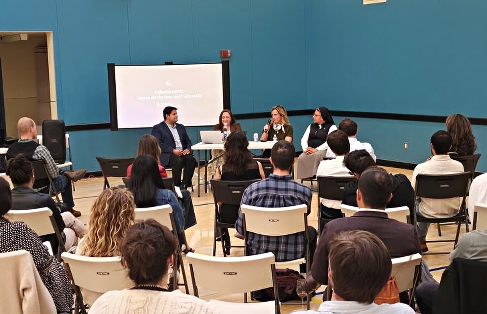

The events.
Everything Catholic Leaders in Action is running next, and what it has already run.
Nothing is on the calendar right now. The next one is announced here and on Instagram.
Also coming.
-

A past action SATURDAY, OCTOBER 10, 2026
Volunteering at St. Vincent de Paul of San Francisco (SVDP-SF) DCNC Shelter
Division Circle Navigation Center, 224 S Van Ness Ave, San Francisco
Free
Online waiver required.
RSVP on Luma

The record.
The record of past evenings is on the home page.